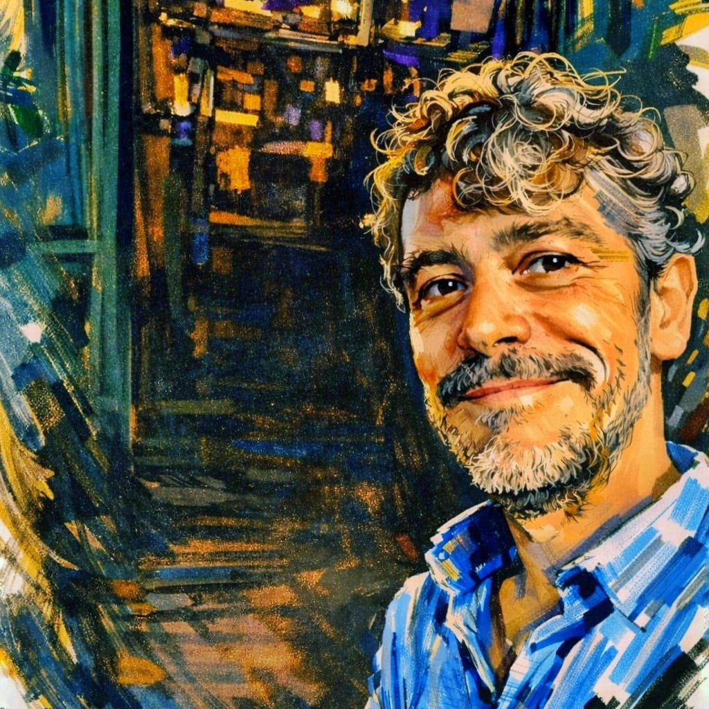

Soy arquitecto colegiado por el COAC con más de 10 años de experiencia en Barcelona y provincia. Trabajo de forma independiente: el arquitecto que te llama es el que te visita, firma el documento y responde si tienes cualquier duda.
Me especializo en los trámites que los propietarios necesitan cuando van a vender, alquilar o reformar: certificados energéticos, cédulas de habitabilidad, proyectos de reforma e inspecciones técnicas de edificios.
Hay algo que diferencia trabajar con un profesional independiente de contratar a una plataforma online: la responsabilidad directa. Cuando trabajas conmigo, sabes exactamente con quién estás tratando y a quién puedes llamar si surge cualquier problema.
No tengo un departamento de atención al cliente. Tampoco lo necesito. Soy yo quien gestiona cada encargo personalmente y quien responde al teléfono cuando llamas.
"Antes de firmar un certificado o un proyecto, visito el inmueble, lo estudio y lo entiendo. No somos una máquina de procesar encargos, somos arquitectos que trabajan para personas."
Nombre y número de colegiado en cada documento que firmo. Sin intermediarios anónimos.
Te digo lo que necesitas, no lo que me conviene venderte. A veces eso significa decirte que no necesitas arquitecto.
Presupuesto cerrado antes de empezar. Sin sorpresas al finalizar el trabajo.
Teléfono y WhatsApp directos al arquitecto. Sin formularios, sin tickets de soporte.
Estudios de arquitectura en la Escola Tècnica Superior d'Arquitectura de Barcelona. Colegiado en el COAC (Col·legi d'Arquitectes de Catalunya).
Primeros años de trayectoria en proyectos de obra nueva y rehabilitación de edificios, adquiriendo experiencia técnica en diferentes escalas y tipologías.
Habilitación para la realización de certificados de eficiencia energética en Cataluña e inspecciones técnicas de edificios. Registro activo en el ICAEN.
Estudio independiente con base en Sabadell y actuación en toda Barcelona y provincia. Especializado en los servicios que los propietarios necesitan: certificados, cédulas, reformas e ITE.
Realizo encargos en todo el área metropolitana de Barcelona y la provincia. Si tienes dudas sobre si llego a tu municipio, llámame o escríbeme por WhatsApp.
Llámame, escríbeme por WhatsApp o usa el formulario de la página de inicio. Te respondo personalmente el mismo día.